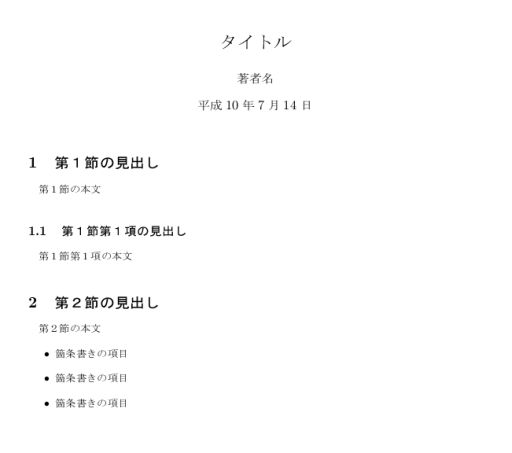
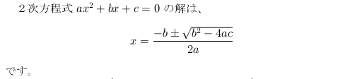
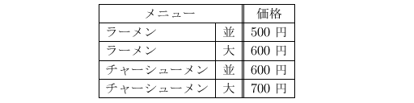

LaTeX ソースファイルは \documentclass[オプション]{文書のクラス} （LaTeX 2.09 の場合は \documentstyle[オプション]{文書のスタイル}）から始まり， \begin{document} ～ \end{document} の間に本文を書きます． \begin{document} より前の部分を プリアンブルと言います．
\documentclass[オプション]{文書のクラス}\begin{document}： （本文）\end{document}
| 文書のクラス（スタイル） | |
|---|---|
| jbook | 本 |
| jarticle | 論文 |
| jreport | 報告書 |
| letter | 手紙 |
| オプション | |
|---|---|
| a4j | 用紙サイズ A4 |
| a5j | 用紙サイズ A5 |
| b4j | 用紙サイズ B4 |
| b5j | 用紙サイズ B5 |
| twocolumn | ２段組 |
| twoside | 両面印刷 |
以下に例とそのプレビューイメージを示します．
\documentclass[a4j]{jarticle}
\title{タイトル}
\author{著者名}
\begin{document}
\maketitle
\section{第１節の見出し}
第１節の本文
\subsection{第１節第１項の見出し}
第１節第１項の本文
\section{第２節の見出し}
第２節の本文
\begin{itemize}
\item 箇条書きの項目
\item 箇条書きの項目
\item 箇条書きの項目
\end{itemize}
\end{document}

文書にタイトル，著者名，日付を付けるときは， プリアンブル（\begin{document} の前）に \title{文書のタイトル}， \author{著者名}， \date{日付} を置き， 本文の先頭（\begin{document} の直後）に \maketitle を置きます．
\date{日付} を省略すると， \date{\today} と同じ（すなわち，コンパイルした日）になる． 著者名や日付をタイトルページに含めたくないときは， それぞれ \author{}，\date{} としてください．
\documentclass[オプション]{文書のクラス}
\title{タイトル}
\author{著者名}
\date{日付}
\begin{document}
\maketitle
： （本文）
\end{document}
文書を章や節などに階層的に区分するために，見出しを用います． 文書の階層構造は次のようになります．
| 文書の階層構造 | |
|---|---|
| \part | 部 |
| \chapter | 章 |
| \setction | 節 |
| \subsection | 項 |
| \subsubsection | |
| \paragraph | 段落 |
| \subparagraph | |
文書クラス jarticle には \chapter はありません． 逆に，jbook や jreport では \section は \chapter の下位の構成要素である必要があります．
\documentclass[オプション]{jarticle}
\title{タイトル}
\author{著者名}
\date{日付}
\begin{document}
\maketitle
\section{第１節の見出し}
： （第１節の本文）
\subsection{第１節第１項の見出し}
： （第１節第１項の本文）
\section{第２節の見出し}
： （第２節の本文）
\end{document}
\documentclass[オプション]{jreport}
\title{タイトル}
\author{著者名}
\date{日付}
\begin{document}
\maketitle
\chapter{第１章の見出し}
\section{第１章第１節の見出し}
： （第１章第１節の本文）
\subsection{第１章第１節第１項の見出し}
： （第１章第１節第１項の本文）
\section{第１章第２節の見出し}
： （第１章第２節の本文）
\end{document}
見出しには自動的に番号がふられます． 見出しに番号をつけたくないときは， \section*{番号をつけない見出し}のように， 見出しのコマンドに * を付けてください．
\chapter*{番号のない章の見出し}\section*{番号のない節の見出し}\subsection*{番号のない項の見出し}
LaTeX ソースプログラム中の改行や空白は無視されてしまいます．強制的に改行したり単語間を開けたりするためには，下のようなコマンドを使います．
| 空白・改行・改ページ | |
|---|---|
| \, | 小さい空白 |
| \スペース | １文字分の空白 |
| ~（チルダ） | 改行されない空白 |
| \hspace{長さ} | 横方向のスペース |
| \vspace{長さ} | 縦方向のスペース |
| \\ | 改行 (\newline) |
| \\* | 改ページされない改行 (\newline*) |
| 空行 | 段落 (\par) |
| \newpage | 改ページ |
| \clearpage | まだ出力していない図表を全部出力して改ページ |
段落を改めるときは，段落間を１行空けて（空行を入れて）ください．
\documentclass{jarticle}
\begin{document}
\section{第１節の見出し}
ここは第１段落．ここは第１段落．ここは第１段落．
ここは第１段落．ここは第１段落．ここは第１段落．ここは第１段落．
ここは第１段落．ここは第１段落．
ここは第２段落．ここは第２段落．ここは第２段落．ここは第２段落．
ここは第２段落．ここに２ｃｍの空白→\hspace{2cm}←ここに２ｃｍの空白．
ここは第２段落．ここは第２段落．ここは第２段落．
\end{document}
「長さ」は次のように表現します．
| 長さの表現 | |
|---|---|
| cm | センチメートル，例：5cm |
| mm | ミリメートル，例：3mm |
| in | インチ，例：0.5in |
| pt | ポイント，1in は 72.27pt |
| em | その字体の文字 M の幅 |
| ex | その字体の文字 x の高さ |
| \fill | 伸ばせるだけの長さ（伸縮する） |
箇条書きを行う部分は \begin{itemize} ～ \end{itemize} ではさんで， 各項目の先頭に \item を置きます．
\documentclass[オプション]{jarticle}
\title{タイトル}
\author{著者名}
\date{日付}
\begin{document}
\maketitle
\section{第１節の見出し}
： （第１節の本文）
\begin{itemize}
\item 一つ目の項目
\item 二つ目の項目
\item 三つ目の項目
\item 四つ目の項目
\end{itemize}
\end{document}
\begin{itemize} ～ \end{itemize} の中に \begin{itemize} ～ \end{itemize} を置いて， リストを入れ子構造にすることもできます．
各項目に番号をつけたリストも作成できます． これは箇条書きの部分を \begin{enumerate} ～ \end{enumerate} ではさんで， 各項目の最初に \item を置きます． これもリストを入れ子構造にできます．
\documentclass[オプション]{jarticle}
\title{タイトル}
\author{著者名}
\date{日付}
\begin{document}
\maketitle
\section{第１節の見出し}
： （第１節の本文）
\begin{enumerate}
\item 一つ目の項目
\item 二つ目の項目
\item 三つ目の項目
\item 四つ目の項目
\end{enumerate}
\end{document}
単語リストのように， あるキーワードに対して説明を加えるようなリストです． これはリストの部分を \begin{enumerate} ～ \end{enumerate} ではさんで， \item[キーワード] に続けて， そのキーワードに対する記述を置きます． これもリストを入れ子構造にできます．
\documentclass[オプション]{jarticle}
\title{タイトル}
\author{著者名}
\date{日付}
\begin{document}
\maketitle
\section{第１節の見出し}
： （第１節の本文）
\begin{description}
\item[札幌ラーメン] 麺は太めのちじれ麺であり，
醤油，塩，味噌などのバリエーションがあるが，
特に味噌ラーメンが重視されている．
具は一般的なものに加えてコーンを加えることが多い．
バターをのせることもある．
\item[博多ラーメン] 細いストレート麺が主流で，
中でも長浜ラーメンの麺はかなり細い．
スープはトンコツが主体で，
色の白いスープが多い．
かなり脂っこいものもある．
付け合わせに紅しょうが・からし高菜を用いるようだ．
\item[和歌山ラーメン] 細目の麺だが，
博多ラーメンほどではない．
わりと伸び気味にゆでるせいか，
スープで麺が太っていることもある．
スープはトンコツベースの醤油味．
いっしょに早すし（早熟れ鮨，あせ巻き寿司）を食べる．
\end{description}
\end{document}
引用部分は \begin{quotation} ～ \end{quotation} ではさみます． この部分は行の長さを本文より短くします． 引用文の段落には空行を置きます．
ここは本文．ここは本文．ここは本文．ここは本文． ここは本文．ここは本文．ここは本文．ここは本文． ここは本文．ここは本文．ここは本文．ここは本文． ここは本文．ここは本文．ここは本文．ここは本文．\begin{quotation}ここは引用文の１つ目の段落．ここは引用文の１つ目の段落． ここは引用文の１つ目の段落．ここは引用文の１つ目の段落． ここは引用文の２つ目の段落．ここは引用文の２つ目の段落． ここは引用文の２つ目の段落．ここは引用文の２つ目の段落．\end{quotation}ここは本文．ここは本文．ここは本文．ここは本文． ここは本文．ここは本文．ここは本文．ここは本文． ここは本文．ここは本文．ここは本文．ここは本文．
\begin{quote} ～ \end{quote} ではさんだ引用部分は， 空行は改行として扱われ， 段落の先頭の字下げを行いません． これは短い文章の引用に用います．
ここは本文．ここは本文．ここは本文．ここは本文． ここは本文．ここは本文．ここは本文．ここは本文． ここは本文．ここは本文．ここは本文．ここは本文． ここは本文．ここは本文．ここは本文．ここは本文．\begin{quote}ここは引用文の１行目の文章．ここは引用文の１行目の文章． ここは引用文の１行目の文章．ここは引用文の１行目の文章． ここは引用文の２行目の文章．ここは引用文の２行目の文章． ここは引用文の２行目の文章．ここは引用文の２行目の文章．\end{quote}ここは本文．ここは本文．ここは本文．ここは本文． ここは本文．ここは本文．ここは本文．ここは本文． ここは本文．ここは本文．ここは本文．ここは本文．
中央に揃えたい部分は \begin{center} ～ \end{center} ではさみます． 各行は \\ で区切ります．
\begin{center}この部分は \\ 中央に \\ 揃えられます．\end{center}
左寄せや右寄せを行うには，center の代りにそれぞれ flushleft，flushright を指定します．
LaTeX ソースファイル中では改行や空白は無視されてしまいますが， それだと不便なことがあります． 改行や空白によるレイアウトを活かして表示するためには， その部分を \begin{verbatim} ～ \end{verbatim} ではさみます． このはさんだ部分はひとつの段落になってしまうので， １行中にそのまま表示したい部分を含めるときには， \verb+そのまま表示したい文字列+ というように書きます．
この部分は詰め込みが行われる本文． この部分は詰め込みが行われる本文．\begin{verbatim}○┃×┃× ━╋━╋━ ×┃○┃○ ━╋━╋━ ○┃○┃×\end{verbatim}この部分は詰め込みが行われる本文．\verb+そのまま表示する文字列+この部分は詰め込みが行われる本文．
文章を枠（ボックス）に入れて，それを一つの文字のように扱えるようにできます．空白を含む複数の文字列が途中で改行されないようにするためには， \mbox{文字列} を使ってそれが１文字として扱われるようにします．
ここは本文．\mbox{ここは改行されない．}ここは本文．
\fbox{文字列} は \mbox{文字列} と同じですが，ボックスの周囲に枠線を描きます．
ここは本文．\fbox{ここには枠が付く．}ここは本文．
\raisebox{高さ}{文字列} 使えば， ボックスにいれた文字列の位置（高さ）を指定できます．
ここは元の高さ．\raisebox{0.5ex}{ここは 0.5ex だけ上げる．}ここは元の高さ．\raisebox{-0.5ex}{ここは 0.5ex だけ下げる．}
\makebox[ボックスの幅][位置]{文字列} は \mbox{文字列} と同じですが，ボックスの幅を指定できます． 位置は l（左）,c（中央）,r（右）のいずれかで， 文字列がボックスの幅より短かったときに寄せる方向を指定します．
ここは本文．\makebox[3in]{３インチ幅で中央揃え．}ここは本文． ここは本文．\makebox[3in][r]{３インチ幅で右寄せ．}ここは本文．
\framebox{文字列} は \makebox{文字列} と同じですが，ボックスの周囲に枠線を描きます．
ここは本文．\framebox[3in][l]{３インチ幅の枠内に左寄せ．}ここは本文．
\parbox[位置]{幅}{文字列} には， 段落を含むような長い文章を入れることができます． 文字列の長さが幅より長い場合は，その幅で改行されます． その分ボックスの高さは高くなります． 位置は t（上）または b（下） で， t ならボックスの上部がそのボックスのある行の高さに一致します． b ならボックスの下部がそのボックスのある行の高さに一致します． 位置を省略するとボックスの中央になります．
ここは本文．\parbox{1in}{１インチ幅の枠内に入る．}ここは本文． ここは本文．\parbox[t]{1in}{１インチ幅の枠内に入る．}ここは本文．
| 字体 | |
|---|---|
| {\rm 文字列} | ローマン体（標準） |
| {\bf 文字列} | ボールド体（太字） |
| {\it 文字列} | イタリック体（強調） |
| {\sf 文字列} | サンセリフ体 |
| {\sl 文字列} | 斜体 |
| {\sc 文字列} | スモールキャップス（全部大文字） |
| {\tt 文字列} | タイプライタ体 |
| {\gt 文字列} | ゴシック体（日本語） |
| {\mc 文字列} | 明朝体（日本語） |
| 字の大きさ | |
|---|---|
| {\tiny 文字列} | 最小 |
| {\scriptsize 文字列} | 添字の大きさ |
| {\footnotesize 文字列} | 脚注の文字の大きさ |
| {\small 文字列} | 小さな字 |
| {\normalsize 文字列} | 標準の大きさ |
| {\large 文字列} | 大きな字 |
| {\LARGE 文字列} | とっても大きな字 |
| {\Huge 文字列} | 巨大な字 |
以下の記号は LaTeX のソースファイル中では特別な意味を持つため， そのままでは印刷できません．
% { } & # $ ^ ~ \ _ < > |
これらを表示するには，３通りの方法があります．
| 記号 | |
|---|---|
| \ | \backslash |
| → | \rightarrow |
| ← | \leftarrow |
| ↑ | \uparrow |
| ↓ | \downarrow |
| 小さい○ | \circ |
| 小さい● | \bullet |
| 小さい◇ | \diamond |
| 大きい◯ | \bigcirc |
| 大きい◇ | \Diamond |
| □ | \Box |
| △ | \triangle |
| ♯ | \sharp |
| ♭ | \flat |
| ナチュラル | \natural |
| † | \dagger |
| ‡ | \ddagger |
文中に数式を書くときは，式を \( ～ \) ではさんでください． 短い式の時は $ ～ $ も使えます． 数式だけを独立した行に書くときは，\[ ～ \] ではさんでください．
\( ～ \) は \begin{math} ～ \end{math} の省略形， \[ ～ \] は \begin{displaymath} ～ \end{displaymath} の省略形です． 数式に通し番号を打つときは \begin{equation} ～ \end{equation} を使ってください．
ほかに複数行にわたる数式を書くための \eqnarray というものもありますが，ここでは割愛します． 自分で参考書等を読んでください．
２次方程式 \( a x^{2} + b x + c = 0 \) の解は，
\[ x = \frac{ -b \pm \sqrt{ b^{2} - 4 a c } }{2 a} \]
です．

数学記号のほとんどは， 次のような記法で書きます． 一部を抜粋します．
| 数式・数学記号 | |
|---|---|
| 上つき文字 | x^{y} |
| 下つき文字 | x_{y} |
| 分数 | \frac{分子}{分母} |
| 平方根 | \sqrt{x} |
| ３乗根 | \sqrt[3]{x} |
| 合計 | \sum_{i=1}^{n} x_{i} |
| 積分 | \int_{0}^{1} f(x) dx |
| 剰余 | a \bmod \b または x \pmod{y} |
| 極限 | \lim_{x \rightarrow \infty} f(x) |
| 関数 | \sin \cos \tan \log \ln ほか |
| ギリシャ文字 | \alpha \beta \pi \theta \phi \omega ほか |
| ± | \pm |
| マイナスプラス | \mp |
| × | \times |
| ÷ | \div |
| ・ | \cdot |
| ∩ | \cap |
| ∪ | \cup |
| ≦ | \leq |
| ≧ | \geq |
| 《 | \ll |
| 》 | \gg |
| ≠ | \neq |
| ∞ | \infty |
| ∈ | \in |
| ∋ | \ni |
| ⊂ | \subset |
| ⊃ | \supset |
| ⊆ | \subseteq |
| ⊇ | \supseteq |
| ∧ | \wedge |
| ∨ | \vee |
| ￢ | \neg |
| ⇒ | \Rightarrow |
| ⇔ | \Leftrightarrow |
| ∀ | \forall |
| ∃ | \exists |
| ∠ | \angle |
| ⊥ | \bot |
| ∂ | \partial |
| ∇ | \nabla |
| ≡ | \equiv |
| ∝ | \propto |
配列は \begin{array}{桁位置} ～ \end{array} の間に，要素を & で区切り，行を \\で区切って書きます． 桁位置は対応する桁の要素を揃える位置を指定します． l は左，c は中央，r は右に揃えます．
\[\begin{array}{lcr}a&x&1\\a+b&x+y&10\\a+b+c&x+y+z&100\end{array}\]
行列や行列式を表すために，配列を大きな（…）や│…│でくくりたいときは， \left( ～ \right) や \left| ～ \right| でくくります． ｛…｝でくくりたいときは \left\{ ～ \right\{ でくくってください．
\[\left(\begin{array}{lcr} a & x & 1 \\ a+b & x+y & 10 \\ a+b+c & x+y+z & 100 \end{array}\right)\]

\left と \right は対応している必要がありますが， \left( と \right] のように， 左右で異なる括弧を使っても構いません． 片方だけの括弧を使いたいときは， 括弧を置かない方に \left. あるいは \right. を使ってください．
表は配列に似ていて， \begin{tabular}{桁位置} ～ \end{tabular} の間に，要素を & で区切り，行を \\で区切って書きます． 桁位置は対応する桁の要素を揃える位置を指定します． l は左，c は中央，r は右に揃えます．
\begin{tabular}{lcr}ラーメン&並&500 円\\ラーメン&大&600 円\\チャーシューメン&並&600 円\\チャーシューメン&大&700 円\end{tabular}

縦の罫線は桁位置の指定のところに | を置きます． || だと２重線になります． 横の罫線は各行の \\ のあとに \hline を置きます． これも \hline \hline とすると２重線になります．
\begin{tabular}{||l|c|r||} \hline
ラーメン & 並 & 500 円 \\ \hline
ラーメン & 大 & 600 円 \\ \hline
チャーシューメン & 並 & 600 円 \\ \hline
チャーシューメン & 大 & 700 円 \\ \hline
\end{tabular}
表の下にも罫線を引くために，表の最後の行にも \\ が追加されていることに注意してください．複数の列にわたる欄は，\multicolumn{欄の数}{桁位置}{欄の内容} を使って書きます． 桁位置は l または c または r で， この欄に罫線を引くときは桁位置の文字に | を追加します．
\begin{tabular}{|l|c||r|} \hline
\multicolumn{2}{|c||}{メニュー} & \multicolumn{1}{c|}{価格} \\ \hline
ラーメン & 並 & 500 円 \\ \hline
ラーメン & 大 & 600 円 \\ \hline
チャーシューメン & 並 & 600 円 \\ \hline
チャーシューメン & 大 & 700 円 \\ \hline
\end{tabular}

なお，このほかに前後の行で桁位置を合わせるために用いる tabbing も表の作成に使えますが，ここでは割愛します． 自分で参考書等を読んでください．
LaTeX の文書中に図をいれるにはいくつかの方法がありますが， tgif や gimp で作った図を入れるのが手っ取り早いと思います． ここでは graphicx というパッケージについて説明します． まず，tgif や gimp で図や画像を EPS 形式 で保存してください． ファイル名の拡張子は ".eps" にしておくといいでしょう．
プリアンブルにおいて，\usepackage[dvips]{graphicx} と宣言しておき，図や画像を埋め込みたいところに \includegraphics[オプション]{ファイル名} コマンドを置きます．
\documentclass[オプション]{文書のクラス}
\usepackage[dvips]{graphicx}
\begin{document}
：
\includegraphics{figure.eps}
：
\end{document}
埋め込む図や画像のサイズなどを指定する場合は，\includegraphics コマンドのオプションで指定します．オプションには width（幅），height（高さ），scale（拡大縮小率），および angle（回転角）が指定できます．
\documentclass[オプション]{文書のクラス}
\usepackage[dvips]{graphicx}
\begin{document}
：
\includegraphics[width=8cm]{figure1.eps}
：
\includegraphics[height=2in]{figure2.eps}
：
\includegraphics[angle=90]{figure3.eps}
：
\end{document}
figure1.eps は横幅 8 センチ， figure2.eps は高さ 2 インチ，figure3.eps は90度回転して埋め込まれます．
表や図がそのページに収まりきらないと， 改ページして次のページに出力されてしまいます． すると，元のページには大きな空白ができてしまうことがあります．\begin{figure} ～ \end{figure}（図の場合）あるいは \begin{table} ～ \end{table}（表の場合） で図表をはさむと， その図や表を収まりのいい場所に自動的に移動することができます．
\begin{figure}\epsfbox{figure.eps} \caption{尾も白い犬}\end{figure}
\begin{table}\begin{tabular}{|l|c||r|} \hline \multicolumn{2}{|c||}{メニュー} & \multicolumn{1}{c|}{価格} \\ \hline ラーメン & 並 & 500 円 \\ \hline ラーメン & 大 & 600 円 \\ \hline チャーシューメン & 並 & 600 円 \\ \hline チャーシューメン & 大 & 700 円 \\ \hline \end{tabular} \caption{ラーメン屋の価格表}\end{table}
*} ～ \end{figure*}（図の場合）あるいは \begin{table*} ～ \end{table*}（表の場合） を用いると，２段組の場合に２段抜きで図表を挿入できます．[場所] として， 図表を挿入する場所の候補を指定できます．
図表を中央に揃える場合には，図表の部分を \begin{center} ～ \end{center} ではさんでください． その場合 \leavevmode を追加しないと，うまく中央に揃えられない場合があります．
\begin{figure}[t]
\begin{center}
\leavevmode
\includegraphics[width=60mm]{figure.eps}
\caption{A white tail dog}
\end{center}
\end{figure}